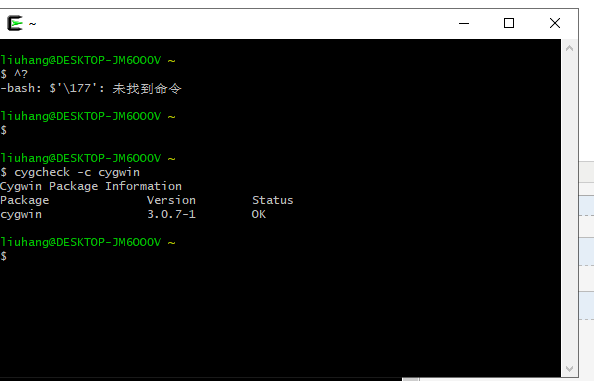
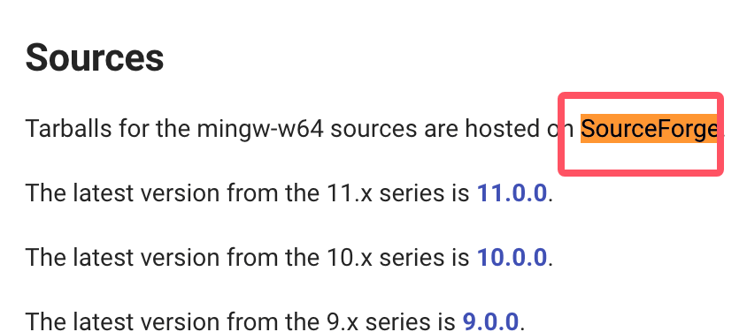

C Environment Setup
If you want to set up a C language environment, you need to make sure the following two pieces of software are available on your computer: a text editor and a C compiler.
Text Editor
Files created with an editor are usually called source files; source files contain the program's source code.
C program source files usually use the extension.c。
Before starting programming, make sure you have a text editor and enough experience to write a computer program, then save it in a file, compile and execute it.
Visual Studio Code: Although it is a general-purpose text editor, it has many plugins supporting C/C++ development, making it a popular choice. By installing C/C++ plugins and adjusting settings, you can turn it into a great C language development environment.
Installation Guide:https://www.runoob.com/w3cnote/vscode-tutorial.html
Download URL:https://code.visualstudio.com/
Sublime Text: Sublime Text is a lightweight, fast, and highly customizable text editor with many plugins supporting C language development. It has powerful code editing features and shortcuts, making coding more efficient.
Download URL:https://www.sublimetext.com/
AtomAtom is an open-source text editor developed by GitHub. It has many plugins and themes and can be customized into an environment suitable for C language development.
Download URL:https://atom-editor.cc/
VimandEmacs: These two are traditional text editors. They have powerful editing features and a high degree of customizability. They are very powerful for experienced users, and there are many plugins and configurations that can support C language development.
Eclipse: Eclipse is another powerful integrated development environment. Although it was originally designed for Java development, installing C/C++ plugins can make it support C language development.
C Compiler
The source code written in the source file is human-readable source. It needs to be "compiled" into machine language so that the CPU can execute the program according to the given instructions.
A C language compiler is used to compile source code into a final executable program. It is assumed here that you already have a basic understanding of programming language compilers.
The most commonly used freely available compiler is the GNU C/C++ compiler. If you are using HP or Solaris, you can use the compiler on your respective operating system.
The following sections will guide you on how to install the GNU C/C++ compiler on different operating systems. C/C++ is mentioned here mainly because the GNU gcc compiler is suitable for both C and C++ programming languages.
Installation on UNIX/Linux
If you are usingLinux or UNIX, please use the following command on the command line to check whether GCC is installed on your system:
$ gcc -v
If the GNU compiler is already installed on your computer, the following message will be displayed:
Using built-in specs. Target: i386-redhat-linux Configured with: ../configure --prefix=/usr ....... Thread model: posix gcc version 4.1.2 20080704 (Red Hat 4.1.2-46)
If GCC is not installed, then please followhttp://gcc.gnu.org/install/For detailed instructions on installing GCC, see ...
This tutorial is written based on Linux. All given examples have been compiled on the Cent OS Linux system.
Installation on Mac OS
If you are using Mac OS X, the quickest way to get GCC is to download the Xcode development environment from Apple's website and follow the installation instructions. Once Xcode is installed, you can use the GNU compiler.
Xcode is currently available fromdeveloper.apple.com/technologies/tools/Upload and download.
Installation on Windows
Cygwin
Cygwin is a software package that simulates a Unix/Linux environment on the Windows operating system, allowing users to use Unix-like tools and applications on Windows.
Cygwin provides a set of DLLs (dynamic link libraries) that act as a bridge between the Unix system call layer and the Windows kernel, enabling Unix programs to run on Windows systems.
Cygwin Official Website: https://www.cygwin.com/。
Download the installer from the official website:

After the download is complete, double-click the downloaded file:

Next you can keep clicking Next:


Here we can add NetEase open source mirror and Alibaba Cloud mirrorhttps://mirrors.aliyun.com/cygwin/：

After installation is complete, an icon will be generated on the desktop:

Double-click the icon, enter the command line interface, and typecygcheck -c cygwinThe command can be used to view the current Cygwin version information:

Next, we install the gcc/g++ compilation environment. In the command line, enter the directory containing setup-x86_64.exe and execute:
setup-x86_64.exe -q -P wget -P gcc-g++ -P make -P diffutils -P libmpfr-devel -P libgmp-devel -P libmpc-devel
After installation, enter the Cygwin64 terminal and typegcc --versionThe command allows you to view the version information.
MinGW-w64
To install GCC on Windows, you need to install MinGW-w64.
MinGW-w64 is an open source project that provides a complete GCC toolchain for Windows systems, supporting compilation of 32-bit and 64-bit Windows applications.
Visit the MinGW-w64 homepage.mingw-w64.orgGo to the MinGW download page.https://www.mingw-w64.org/downloads/Download the latest version of the MinGW-w64 installer.
The MinGW-w64 download details page contains many integration packages of MinGW-w64 and specific tools:

We only install MinGW-w64, so you just need to download MinGW-w64. Click the "SourceForge" hyperlink in the red box, and you will be taken to the MinGW-w64 download page on SourceForge.
Download MinGW-w64 from SourceForge:https://sourceforge.net/projects/mingw-w64/files/
There are also precompiled binary packages on GitHub:https://github.com/niXman/mingw-builds-binaries/releases

You can download the installer for the specified system:
- 32-bit system:installer.exe
- 64-bit system:installer.exe

This kind of installation may encounter network connection errors, so we can directly download sjlj (stable, supports both 64-bit and 32-bit):
<p>Scroll down the page to download the installer:</p><p><img decoding="async" style="width:70%" src="../wp-content/uploads/2014/09/7b544fedd185c3b84692c9e7aaf12cf2.png"></p><p>This installation method may encounter network connection errors, so we can directly download sjlj (stable, supporting both 64-bit and 32-bit):</p><p><img decoding="async" style="width:70%" src="../wp-content/uploads/2014/09/7b544fedd185c3b84692c9e7aaf12cf2.png"></p>After downloading, extract it, and you can find g++.exe or gcc.exe in the bin directory:

When installing MinGW, you should at least install gcc-core, gcc-g++, binutils, and MinGW runtime, but in general you will install more other items.
Add the bin subdirectory of your installed MinGW to yourPATHIn the environment variables, so that you can specify these tools by simple names on the command line.

Once the installation is complete, you can run gcc, g++, ar, ranlib, dlltool, and other GNU tools from the Windows command line.
other extensions